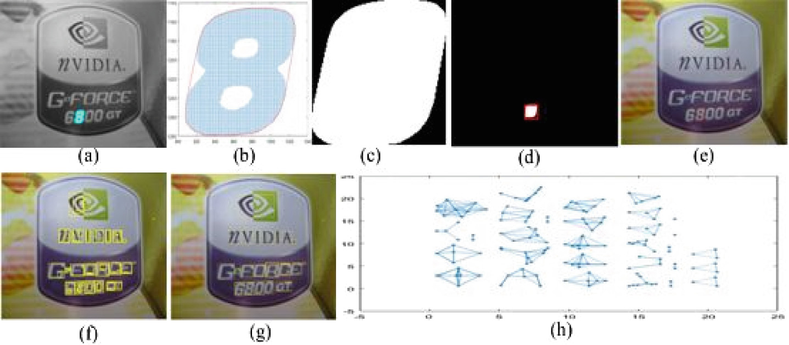

|
MSERs detection and filtering: (a) Original image. (b) Detected MSERs. (c) MSER filtered image using shape parameters.
|
MSER Detection Candidate regions are extracted from grayscale images using Maximally Stable Extremal Regions (MSER). Shape properties like solidity, extent, and eccentricity help filter meaningful regions of interest while removing background noise. |
|
Text Region Proposals Bounding boxes are created around detected MSERs. Overlaps are reduced using Jaccard similarity and graph-based clustering, producing compact proposals for potential text regions. |

(a) Detected MSER. (b) Pixels of the detected MSER enclosed by its convex envelope.
(c) Binary convex hull image with pixels within the hull set to 1.
(d) Bounding box of the binary convex hull image.
(e) Bounding box for the MSER in the original image.
(f) MBRs of all the filtered MSERs.
(g) Elimination of inner MBRs and merging of partially overlapping MBRs.
(h) Graph of the connected components of MSER regions.
|
|
Stages of text detection: (a) Character proposals. (b) Detected characters.
(c) Chain of overlapping characters. (d) Word level detection.
(e) OCR text recognition on full image.
(f) OCR text recognition on our detected text regions.
|
Text Detection A pre-trained CNN (AlexNet) extracts features from text region proposals. These are classified using an SVM, and OCR is applied to recognized words, improving robustness in logo-related text detection. |
|
Logo Detection & Classification Remaining non-text MSERs are clustered into logo candidates. AlexNet-based deep features (4096-d) are extracted and classified using an SVM into logo classes, achieving high recognition accuracy. |
(a) Architecture of the pre-trained Alexnet used in our work.
(b) Features extracted by several hidden layers of the pre-trained CNN from sample input logo images.
|
| Method | Year | Precision | Recall | F-Measure |
|---|---|---|---|---|
| Romberg et al. [3] | 2011 | 0.982 | 0.610 | 0.752 |
| Revaud et al. [18] | 2012 | ≥ 0.980 | 0.726 | 0.834 |
| Romberg et al. [19] | 2013 | 0.999 | 0.832 | 0.908 |
| Farajzadeh [20] | 2015 | 0.931 | 0.857 | 0.892 |
| Iandola et al. [9] - AlexNet | 2015 | 0.735 | Not reported | Not reported |
| Liu et al. [21] | 2016 | 0.962 | 0.864 | 0.910 |
| Oliveira et al. [11] - Caffenet | 2016 | 0.928 | 0.891 | 0.909 |
| Proposed method (only FlickrLogos-32) |
– | 0.986 | 0.979 | 0.982 |
@InProceedings{10.1007/978-3-319-68124-5_13,
author="Medhi, Moushumi
and Sinha, Shubham
and Sahay, Rajiv Ranjan",
title="A Text Recognition Augmented Deep Learning Approach for Logo Identification",
booktitle="Computer Vision, Graphics, and Image Processing",
year="2017",
pages="145--156"
}